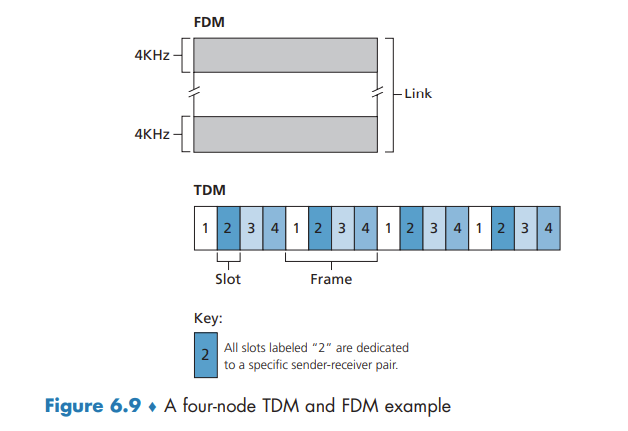

The Link Layer and LANs
This contents of this chapter is part of the curriculum for TTM4100, except for the sections 6.4.4, 6.5 and 6.6.
Introduction to the Link Layer
The Services Provided by the Link Layer
Possible services that can be offered by a link-layer protocol include:
- Framing. A frame consists of a data field, in which the network-layer datagram is inserted, and a number of header fields. The structure of the frame is specified by the link-layer protocol.
- Link access. A medium access control (MAC) protocol specifies the rules by which a frame is transmitted onto the link, and serves to coordinate the frame transmissions of the many nodes.
- Reliable delivery.
- Error detection and correction.
Where Is the Link Layer Implemented?
For the most part, the link layer is implemented on a chip called the network adapter, also sometimes known as a network interface controller (NIC).
If the link layer performs error detection, then it is the sending controller that sets the error-detection bits in the frame header and it is the receiving controller that performs error detection.

Error-Detection and -Correction Techniques

Techniques for detecting errors in the transmitted data:
- parity checks
- checksumming methods
- cyclic redundancy checks
Parity Checks
In an even parity scheme, the sender simply includes one additional bit and chooses its value such that the total number of 1s is even.
Under burst error conditions, the probability of undetected errors in a frame protected by single-bit parity can approach 50 percent.
With this two-dimensional parity scheme, the parity of both the column and the row containing the flipped bit will be in error. The receiver can thus not only detect the fact that a single bit error has occurred, but can use the column and row indices of the column and row with parity errors to actually identify the bit that was corrupted and correct that error!

The ability of the receiver to both detect and correct errors is known as forward error correction (FEC).
Checksumming Methods
The Internet checksum is based on this approach—bytes of data are treated as 16-bit integers and summed.
the receiver checks the checksum by taking the 1s complement of the sum of the received data (including the checksum) and checking whether the result is all 0 bits. If any of the bits are 1, an error is indicated.
Checksumming methods require relatively little packet overhead. For example, the checksums in TCP and UDP use only 16 bits. However, they provide relatively weak protection against errors as compared with cyclic redundancy check.
error detection at the link layer is implemented in dedicated hardware in adapters
Cyclic Redundancy Check (CRC)
CRC codes are also known as polynomial codes
Consider the d-bit piece of data, D, that the sending node wants to send to the receiving node. The sender and receiver must first agree on an r + 1 bit pattern, known as a generator.
For a given piece of data, D, the sender will choose r additional bits, R, and append them to D such that the resulting d + r bit pattern (interpreted as a binary number) is exactly divisible by G (i.e., has no remainder) using modulo-2 arithmetic.
All CRC calculations are done in modulo-2 arithmetic without carries in addition or borrows in subtraction. This means that addition and subtraction are identical, and both are equivalent to the bitwise exclusive-or (XOR) of the operands.
Multiplication and division are the same as in base-2 arithmetic, except that any required addition or subtraction is done without carries or borrows.

Multiple Access Links and Protocols
A point-to-point link consists of a single sender at one end of the link and a single receiver at the other end of the link. a broadcast link, can have multiple sending and receiving nodes all connected to the same, single, shared broadcast channel.
a problem of central importance to the link layer: how to coordinate the access of multiple sending and receiving nodes to a shared broadcast channel—the multiple access problem.
traditional television is a one-way broadcast (simplex). nodes on a computer network broadcast channel can both send and receive (duplex).
Computer networks similarly have protocols—so-called multiple access protocols—by which nodes regulate their transmission into the shared broadcast channel.
more than two nodes can transmit frames at the same time. When this happens, all of the nodes receive multiple frames at the same time; that is, the transmitted frames collide at all of the receivers. the broadcast channel is wasted during the collision interval.
We can classify just about any multiple access protocol as belonging to one of three categories: channel partitioning protocols, random access protocols, and taking-turns protocols.
ideally, a multiple access protocol for a broadcast channel of rate R bits per second should have the following desirable characteristics:
- When only one node has data to send, that node has a throughput of R bps.
- When M nodes have data to send, each of these nodes has a throughput of R/M bps. This need not necessarily imply that each of the M nodes always has an instantaneous rate of R/M, but rather that each node should have an average transmission rate of R/M over some suitably defined interval of time.
- The protocol is decentralized; that is, there is no master node that represents a single point of failure for the network.
- The protocol is simple, so that it is inexpensive to implement.
Channel Partitioning Protocols
time-division multiplexing (TDM) and frequency-division multiplexing (FDM) are two techniques that can be used to partition a broadcast channel’s bandwidth among all nodes sharing that channel.

TDM is appealing because it eliminates collisions and is perfectly fair: Each node gets a dedicated transmission rate of R/N bps during each frame time. However, it has two major drawbacks. First, a node is limited to an average rate of R/N bps even when it is the only node with packets to send. A second drawback is that a node must always wait for its turn in the transmission sequence—again, even when it is the only node with a frame to send.
FDM divides the R bps channel into different frequencies (each with a bandwidth of R/N) and assigns each frequency to one of the N nodes. FDM shares both the advantages and drawbacks of TDM.
A third channel partitioning protocol is code division multiple access (CDMA). CDMA assigns a different code to each node. Each node then uses its unique code to encode the data bits it sends. CDMA networks have the wonderful property that different nodes can transmit simultaneously and yet have their respective receivers correctly receive a sender’s encoded data bits (assuming the receiver knows the sender’s code) in spite of interfering transmissions by other nodes.
Random Access Protocols
In a random access protocol, a transmitting node always transmits at the full rate of the channel, namely, R bps. When there is a collision, each node involved in the collision repeatedly retransmits its frame (that is, packet) until its frame gets through without a collision. But when a node experiences a collision, it doesn’t necessarily retransmit the frame right away. Instead it waits a random delay before retransmitting the frame.
Slotted ALOHA
The operation of slotted ALOHA in each node is simple:
- When the node has a fresh frame to send, it waits until the beginning of the next slot and transmits the entire frame in the slot.
- If there isn’t a collision, the node has successfully transmitted its frame and thus need not consider retransmitting the frame. (The node can prepare a new frame for transmission, if it has one.)
- If there is a collision, the node detects the collision before the end of the slot. The node retransmits its frame in each subsequent slot with probability p until the frame is transmitted without a collision.
slotted ALOHA allows a node to transmit continuously at the full rate, R, when that node is the only active node.
A slot in which exactly one node transmits is said to be a successful slot. The efficiency of a slotted multiple access protocol is defined to be the long-run fraction of successful slots in the case when there are a large number of active nodes, each always having a large number of frames to send.
Then the probability that a given slot is a successful slot is the probability that one of the nodes transmits and that the remaining N - 1 nodes do not transmit.
Because there are N nodes, the probability that any one of the N nodes has a success is Np(1 - p)^(N-1).
And to obtain the maximum efficiency for a large number of active nodes, we take the limit of Np'(1 - p')^(N-1) as N approaches infinity.
ALOHA
If a transmitted frame experiences a collision with one or more other transmissions, the node will then immediately (after completely transmitting its collided frame) retransmit the frame with probability p. Otherwise, the node waits for a frame transmission time. After this wait, it then transmits the frame with probability p.
Thus, the probability that a given node has a successful transmission is p(1 - p)^(2(N-1)). the maximum efficiency of the pure ALOHA protocol is only 1/(2e)—exactly half that of slotted ALOHA.
Carrier Sense Multiple Access (CSMA)
There are two important rules for polite human conversation:
- Listen before speaking. In the networking world, this is called carrier sensing
- If someone else begins talking at the same time, stop talking. In the networking world, this is called collision detection
These two rules are embodied in the family of carrier sense multiple access (CSMA) and CSMA with collision detection (CSMA/CD)
it is evident that the end-to-end channel propagation delay of a broadcast channel—the time it takes for a signal to propagate from one of the nodes to another—will play a crucial role in determining its performance. The longer this propagation delay, the larger the chance that a carrier-sensing node is not yet able to sense a transmission that has already begun at another node in the network.
Carrier Sense Multiple Access with Collision Detection (CSMA/CD)
When a node performs collision detection, it ceases transmission as soon as it detects a collision.
summarize CSMA/CD protocol operation from the perspective of an adapter (in a node) attached to a broadcast channel:
- The adapter obtains a datagram from the network layer, prepares a link-layer frame, and puts the frame adapter buffer.
- If the adapter senses that the channel is idle (that is, there is no signal energy entering the adapter from the channel), it starts to transmit the frame. If, on the other hand, the adapter senses that the channel is busy, it waits until it senses no signal energy and then starts to transmit the frame.
- While transmitting, the adapter monitors for the presence of signal energy coming from other adapters using the broadcast channel.
- If the adapter transmits the entire frame without detecting signal energy from other adapters, the adapter is finished with the frame. If, on the other hand, the adapter detects signal energy from other adapters while transmitting, it aborts the transmission (that is, it stops transmitting its frame).
- After aborting, the adapter waits a random amount of time and then returns to step 2.
What we’d like is an interval that is short when the number of colliding nodes is small, and long when the number of colliding nodes is large. The binary exponential backoff algorithm elegantly solves this problem. a frame that has already experienced n collisions, a node chooses the value of K at random from {0, 1, 2, .... 2^n-1}
CSMA/CD Efficiency
Here we simply state the following approximation: Efficiency = 1 / (1 + 5dprop/dtrans)
Taking-Turns Protocols
The polling protocol requires one of the nodes to be designated as a master node. The master node polls each of the nodes in a round-robin fashion. The polling protocol eliminates the collisions and empty slots that plague random access protocols. This allows polling to achieve a much higher efficiency. Drawbacks: 1) the protocol introduces a polling delay 2) if the master node fails, the entire channel becomes inoperative.
token-passing protocol: no master node. A small, special-purpose frame known as a token is exchanged among the nodes in some fixed order. When a node receives a token, it holds onto the token only if it has some frames to transmit; otherwise, it immediately forwards the token to the next node. Token passing is decentralized and highly efficient. the failure of one node can crash the entire channel. Or if a node accidentally neglects to release the token, then some recovery procedure must be invoked to get the token back in circulation.
DOCSIS: The Link-Layer Protocol for Cable Internet Access
abbr: Data-Over-Cable Service Interface Specifications
we’ll find aspects of each of these three classes of multiple access protocols with the cable access network. FDM, TDM, random access, and centrally allocated time slots all within one network!
a cable access network typically connects several thousand residential cable modems to a cable modem termination system (CMTS)
DOCSIS uses FDM to divide the downstream (CMTS to modem) and upstream (modem to CMTS) network segments into multiple frequency channels. Each upstream and downstream channel is a broadcast channel. Frames transmitted on the downstream channel by the CMTS are received by all cable modems receiving that channel; however, there is no multiple access problem. The upstream direction, however, is more interesting and technically challenging, since multiple cable modems share the same upstream channel (frequency) to the CMTS, and thus collisions can potentially occur.
The CMTS explicitly grants permission to individual cable modems to transmit during specific mini-slots. The CMTS accomplishes this by sending a control message known as a MAP message on a downstream channel to specify which cable modem (with data to send) can transmit during which mini-slot for the interval of time specified in the control message.
cable modems send mini-slot-request. mini-slot-request frames are transmitted in a random access manner and so may collide with each other. When a collision is inferred, a cable modem uses binary exponential backoff to defer the retransmission of its mini-slot-request frame to a future time slot.
Switched Local Area Networks
Link-Layer Addressing and ARP
MAC Addresses
In truth, it is not hosts and routers that have link-layer addresses but rather their adapters (that is, network interfaces) that have link-layer addresses.
A link-layer address is variously called a LAN address, a physical address, or a MAC address.
For most LANs the MAC address is 6 bytes long, giving 2^48 possible MAC addresses. the IEEE manages the MAC address space. IEEE allocates the chunk of 224 addresses by fixing the first 24 bits of a MAC address and letting the company create unique combinations of the last 24 bits for each adapter.
An adapter’s MAC address has a flat structure. An adapter’s MAC address is analogous to a person’s social security number, An IP address is analogous to a person’s postal address.
sometimes a sending adapter does want all the other adapters on the LAN to receive and process the frame it is about to send. In this case, the sending adapter inserts a special MAC broadcast address into the destination address field of the frame (FF-FF-FF-FF-FF-FF)
Address Resolution Protocol (ARP)
Because there are both network-layer addresses (for example, Internet IP addresses) and link-layer addresses (that is, MAC addresses), there is a need to translate between them. For the Internet, this is the job of the Address Resolution Protocol (ARP)
ARP resolves an IP address to a MAC address. In many ways it is analogous to DNS. difference between the two resolvers is that DNS resolves host names for hosts anywhere in the Internet, whereas ARP resolves IP addresses only for hosts and router interfaces on the same subnet.
An ARP packet has several fields, including the sending and receiving IP and MAC addresses. Both ARP query and response packets have the same format. The purpose of the ARP query packet is to query all the other hosts and routers on the subnet to determine the MAC address corresponding to the IP address that is being resolved.
the query ARP message is sent within a broadcast frame, whereas the response ARP message is sent within a standard frame.
ARP is probably best considered a protocol that straddles the boundary between the link and network layers
Sending a Datagram off the Subnet
For each router interface there is also an ARP module (in the router) and an adapter.
in order for a datagram to go from a host on Subnet 1 to a host on Subnet 2, the datagram must first be sent to the (router interface with the IP address of) the first-hop router on the path to the final destination. The router now has to determine the correct interface on which the datagram is to be forwarded.
Ethernet
Today, Ethernet is by far the most prevalent wired LAN technology, and it is likely to remain so for the foreseeable future.
Recall that we covered Ethernet’s CSMA/CD multiple access protocol with binary exponential backoff in Section 6.3.2.
A hub is a physical-layer device that acts on individual bits rather than frames.
In the early 2000s, Ethernet experienced yet another major evolutionary change. Ethernet installations continued to use a star topology, but the hub at the center was replaced with a switch. switch is not only “collision-less” but is also a store-and-forward packet switch, operating only up through layer 2.
Ethernet Frame Structure

Ethernet technologies provide an unreliable service to the network layer. When a frame fails the CRC check, adapter B simply discards the frame.
Ethernet Technologies
Ethernet comes in many different flavors, with somewhat bewildering acronyms such as 10BASE-T, 10BASE-2, 100BASE-T, 1000BASE-LX, 10GBASE-T and 40GBASE-T. The first part of the acronym refers to the speed of the standard. “BASE” refers to baseband Ethernet, meaning that the physical media only carries Ethernet traffic. The final part of the acronym refers to the physical media itself; Ethernet is both a link-layer and a physical-layer specification and is carried over a variety of physical media including coaxial cable, copper wire, and fiber. Generally, a “T” refers to twisted-pair copper wires.
As we’ll see shortly, a switch coordinates its transmissions and never forwards more than one frame onto the same interface at any time. Furthermore, modern switches are full-duplex, so that a switch and a node can each send frames to each other at the same time without interference. In other words, in a switch-based Ethernet LAN there are no collisions and, therefore, there is no need for a MAC protocol!
Link-Layer Switches
Forwarding and Filtering
Filtering is the switch function that determines whether a frame should be forwarded to some interface or should just be dropped. Forwarding is the switch function that determines the interfaces to which a frame should be directed, and then moves the frame to those interfaces. Switch filtering and forwarding are done with a switch table.
To understand how switch filtering and forwarding work, suppose a frame with destination address DD-DD-DD-DD-DD-DD arrives at the switch on interface x. The switch indexes its table with the MAC address DD-DD-DD-DD-DD-DD. There are three possible cases:
- There is no entry in the table for DD-DD-DD-DD-DD-DD. In this case, the switch forwards copies of the frame to the output buffers preceding all interfaces except for interface x. In other words, if there is no entry for the destination address, the switch broadcasts the frame.
- There is an entry in the table, associating DD-DD-DD-DD-DD-DD with interface x. In this case, the frame is coming from a LAN segment that contains adapter DD-DD-DD-DD-DD-DD. There being no need to forward the frame to any of the other interfaces, the switch performs the filtering function by discarding the frame.
- There is an entry in the table, associating DD-DD-DD-DD-DD-DD with interface y≠x. In this case, the frame needs to be forwarded to the LAN segment attached to interface y. The switch performs its forwarding function by putting the frame in an output buffer that precedes interface y.
Self-Learning
Switches are self-learning. This capability is accomplished as follows:
- The switch table is initially empty.
- For each incoming frame received on an interface, the switch stores in its table (1) the MAC address in the frame’s source address field, (2) the interface from which the frame arrived, and (3) the current time. In this manner, the switch records in its table the LAN segment on which the sender resides. If every host in the LAN eventually sends a frame, then every host will eventually get recorded in the table.
- The switch deletes an address in the table if no frames are received with that address as the source address after some period of time (the aging time). In this manner, if a PC is replaced by another PC (with a different adapter), the MAC address of the original PC will eventually be purged from the switch table.
Properties of Link-Layer Switching
We can identify several advantages of using switches, rather than broadcast links such as buses or hub-based star topologies:
- Elimination of collisions.
- Heterogeneous links.
- Management.
Switches Versus Routers
Although a switch is also a store-and-forward packet switch, it is fundamentally different from a router in that it forwards packets using MAC addresses.
First consider the pros and cons of switches. As mentioned above, switches are plug-and-play, a property that is cherished by all the overworked network administrators of the world. Switches can also have relatively high filtering and forwarding rates—as shown in Figure 6.24, switches have to process frames only up through layer 2, whereas routers have to process datagrams up through layer 3. On the other hand, to prevent the cycling of broadcast frames, the active topology of a switched network is restricted to a spanning tree. Also, a large switched network would require large ARP tables in the hosts and routers and would generate substantial ARP traffic and processing. Furthermore, switches are susceptible to broadcast storms—if one host goes haywire and transmits an endless stream of Ethernet broadcast frames, the switches will forward all of these frames, causing the entire network to collapse.
Now consider the pros and cons of routers. packets are not restricted to a spanning tree and can use the best path between source and destination. they provide firewall protection against layer-2 broadcast storms. not plug-and-play. Also, routers often have a larger per-packet processing time than switches,
Switches suffice for these small networks, as they localize traffic and increase aggregate throughput without requiring any configuration of IP addresses. But larger networks consisting of thousands of hosts typically include routers within the network (in addition to switches). The routers provide a more robust isolation of traffic, control broadcast storms, and use more “intelligent” routes among the hosts in the network.